A01_population_age_shares · Official demographic projection
An older population changes the mix of public services
Stats NZ 2024-base median projections through 2078
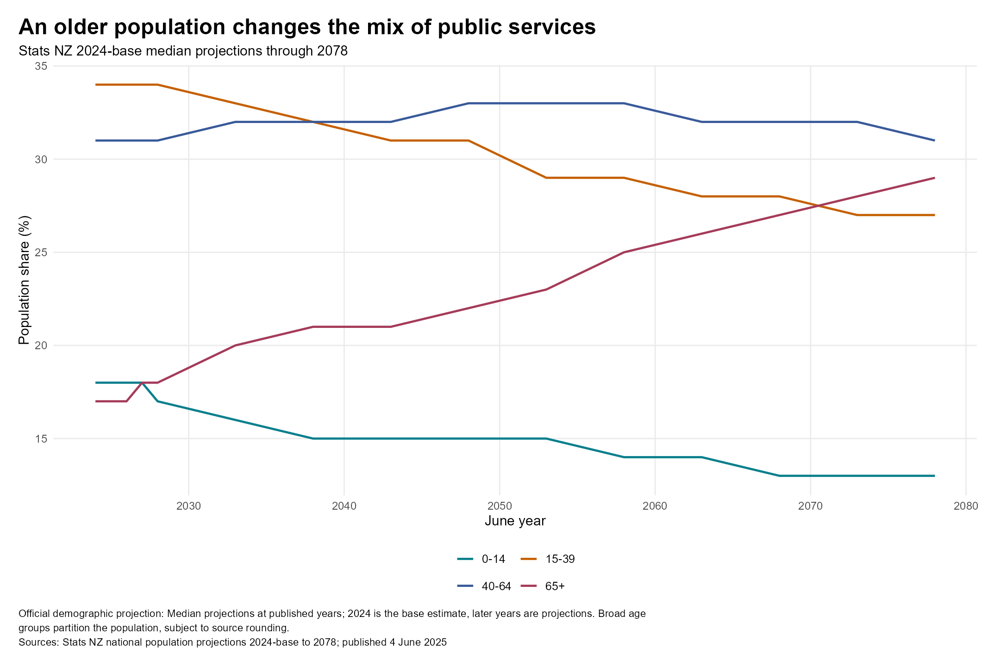
Median projections at published years; 2024 is the base estimate, later years are projections. Broad age groups partition the population, subject to source rounding.
PNG · SVG · Plotted data · Source 1
A02_ageing_uncertainty · Official demographic projection
Ageing is projected with uncertainty
Median and 5th-95th percentile bands for each published population share
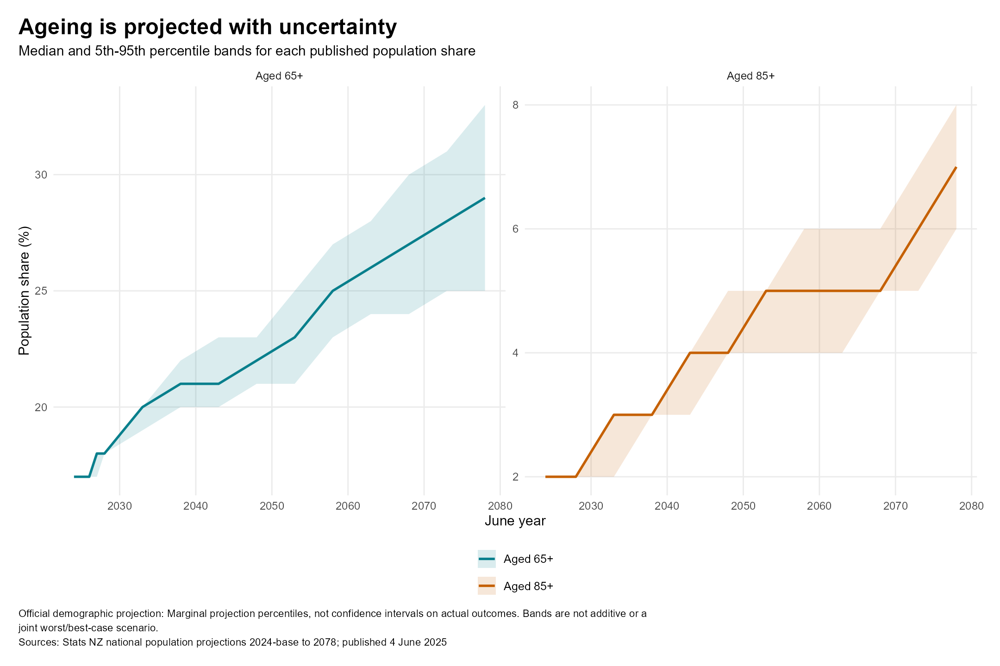
Marginal projection percentiles, not confidence intervals on actual outcomes. Bands are not additive or a joint worst/best-case scenario.
PNG · SVG · Plotted data · Source 1
A03_dependency_ratios · Official demographic projection
Fewer children partly offset more older people
Published Stats NZ median age-dependency ratios
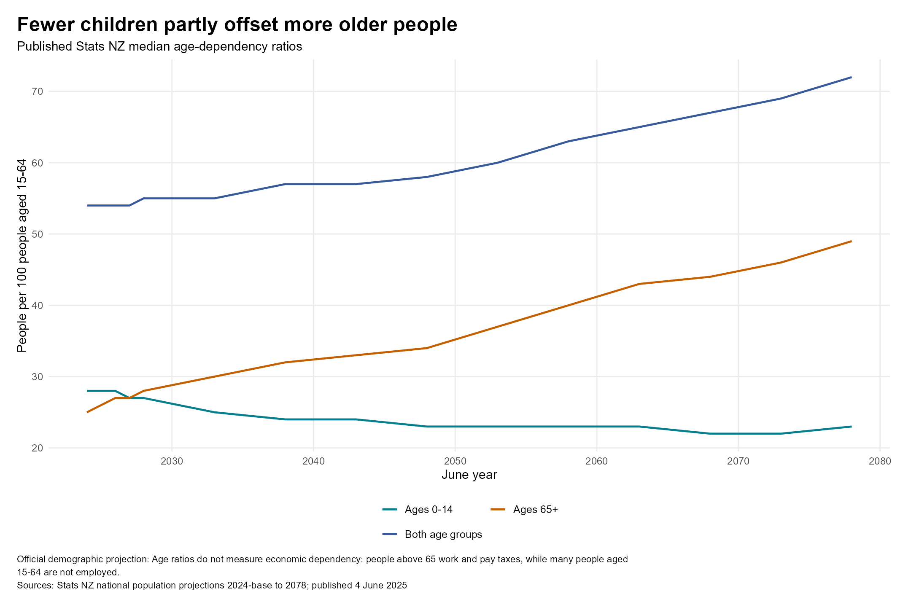
Age ratios do not measure economic dependency: people above 65 work and pay taxes, while many people aged 15-64 are not employed.
PNG · SVG · Plotted data · Source 1
A04_long_age_structure · Historical / forecast / projection
Age structure: history, forecast and long-term projection
Treasury's calibrated population, 2006-2065; dashed dividers after 2024 and 2029
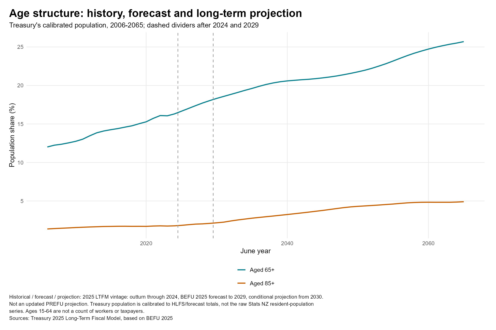
2025 LTFM vintage: outturn through 2024, BEFU 2025 forecast to 2029, conditional projection from 2030. Not an updated PREFU projection. Treasury population is calibrated to HLFS/forecast totals, not the raw Stats NZ resident-population series. Ages 15-64 are not a count of workers or taxpayers.
PNG · SVG · Plotted data · Source 1
A05_ageing_within_retirement · Historical / forecast / projection
The older population is itself ageing
Share of the 65+ population aged 85 or above, Treasury calibrated population
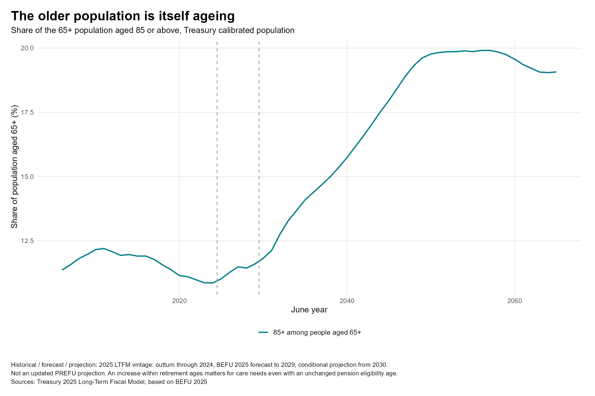
2025 LTFM vintage: outturn through 2024, BEFU 2025 forecast to 2029, conditional projection from 2030. Not an updated PREFU projection. An increase within retirement ages matters for care needs even with an unchanged pension eligibility age.
PNG · SVG · Plotted data · Source 1
A06_older_workforce_participation · Published historical series
People over 65 are not all outside the labour force
Quarterly participation by older age group, as published in LTFS 2025
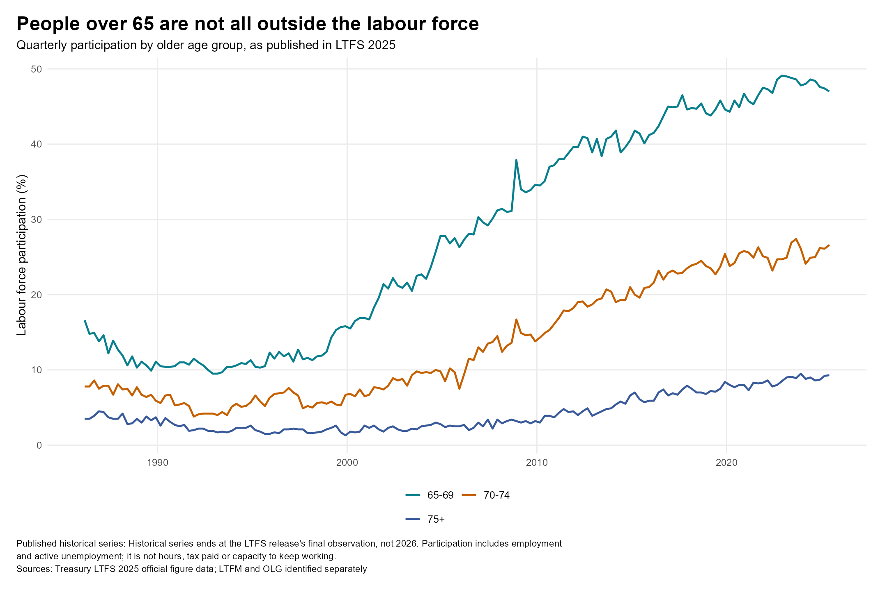
Historical series ends at the LTFS release's final observation, not 2026. Participation includes employment and active unemployment; it is not hours, tax paid or capacity to keep working.
PNG · SVG · Plotted data · Source 1
A07_health_spending_by_age · Published age-cost profile
Age affects both the level and mix of health expenditure
Treasury LTFS Figure 17 age profile; categories stacked
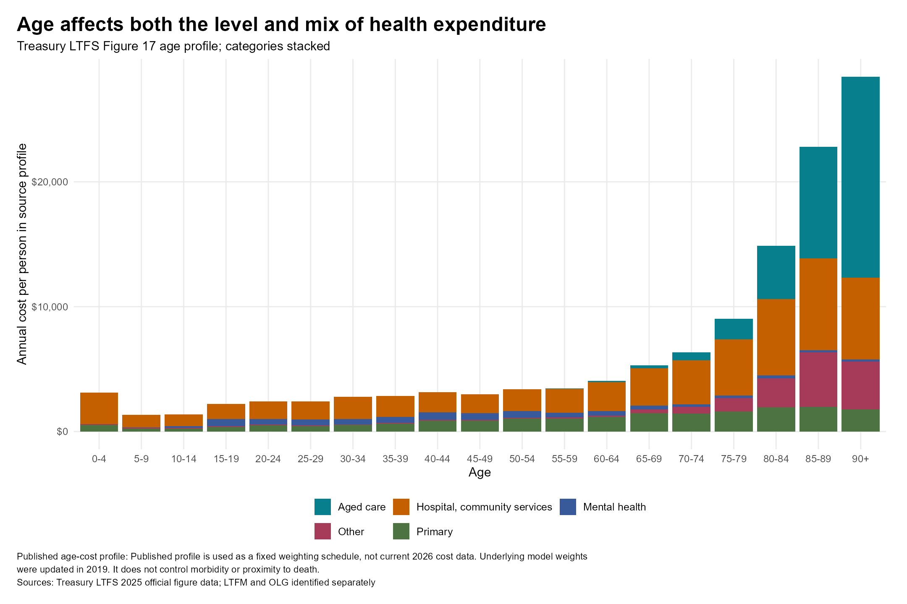
Published profile is used as a fixed weighting schedule, not current 2026 cost data. Underlying model weights were updated in 2019. It does not control morbidity or proximity to death.
PNG · SVG · Plotted data · Source 1
A08_age_mix_health_pressure · Fixed-profile counterfactual
What would ageing alone do at fixed health costs by age?
Population age mix changes; every age-specific cost and service mix is held fixed
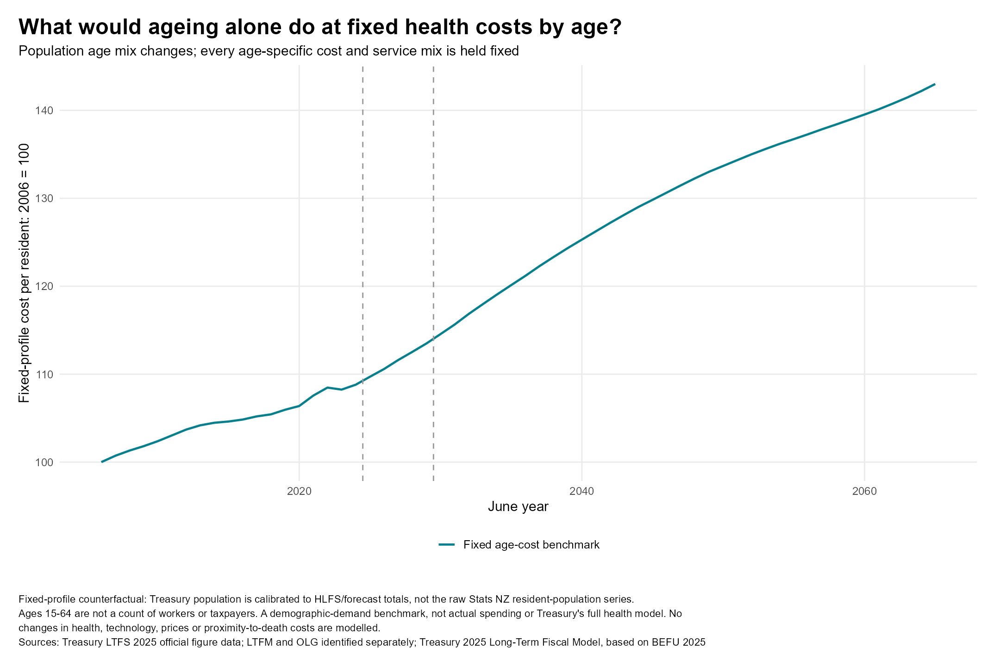
Treasury population is calibrated to HLFS/forecast totals, not the raw Stats NZ resident-population series. Ages 15-64 are not a count of workers or taxpayers. A demographic-demand benchmark, not actual spending or Treasury's full health model. No changes in health, technology, prices or proximity-to-death costs are modelled.
PNG · SVG · Plotted data · Source 1 · Source 2
A09_health_demography_and_full_projection · Projection / fixed-profile counterfactual
Ageing is only one ingredient in projected health spending
Common 2029 starting point; full model versus two demographic benchmarks
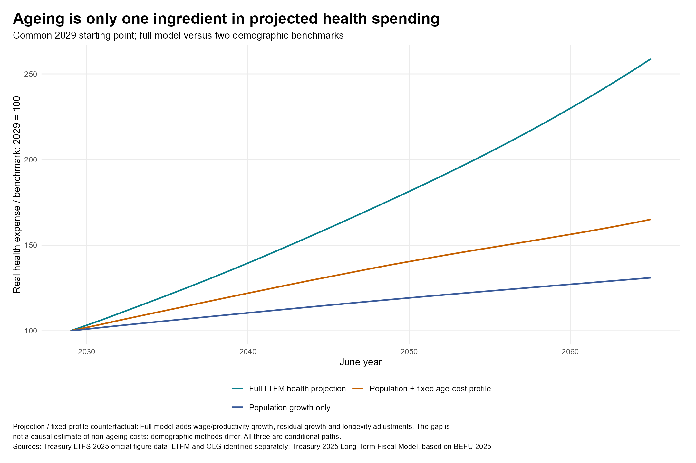
Full model adds wage/productivity growth, residual growth and longevity adjustments. The gap is not a causal estimate of non-ageing costs: demographic methods differ. All three are conditional paths.
PNG · SVG · Plotted data · Source 1 · Source 2
A10_age_mix_by_health_service · Fixed-profile counterfactual
An older age mix affects services differently
Each service's fixed age-specific profile reweighted by Treasury population
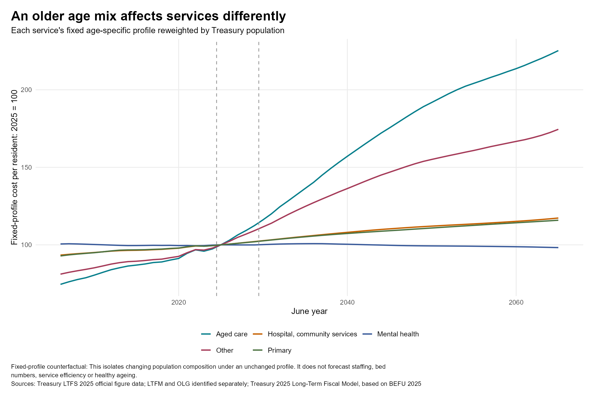
This isolates changing population composition under an unchanged profile. It does not forecast staffing, bed numbers, service efficiency or healthy ageing.
PNG · SVG · Plotted data · Source 1 · Source 2
A11_health_demand_age_mix · Fixed-profile counterfactual
Who accounts for the demographic health-demand benchmark?
Shares of population-weighted source age costs, not allocated future budgets
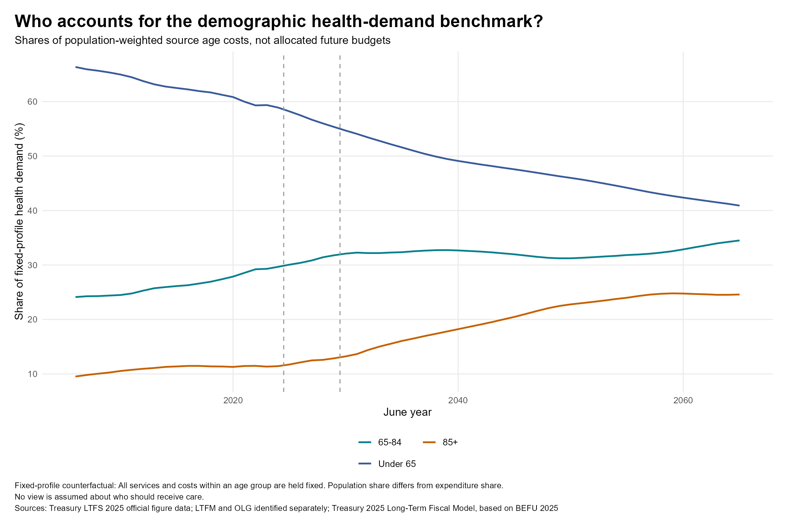
All services and costs within an age group are held fixed. Population share differs from expenditure share. No view is assumed about who should receive care.
PNG · SVG · Plotted data · Source 1 · Source 2
A12_historical_pension_growth_decomposition · Historical accounting decomposition
Why did real NZ Super expenditure increase?
Exact log-mean accounting allocation of 2009-2025 growth
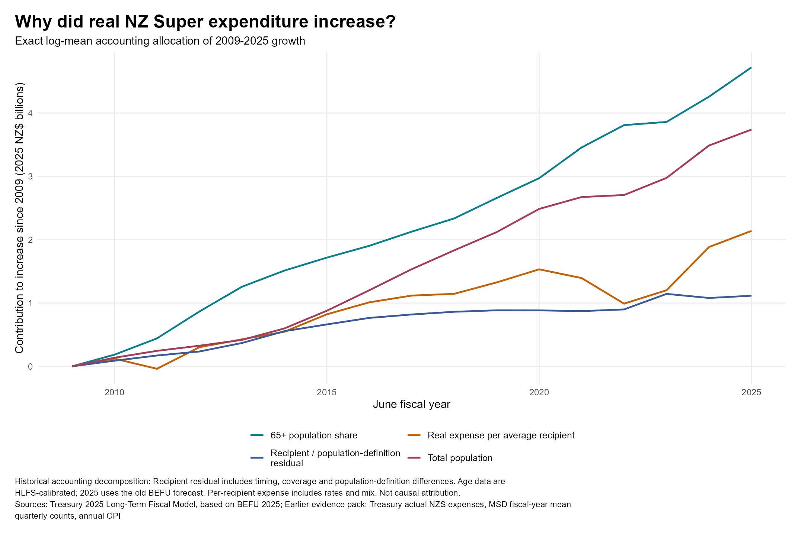
Recipient residual includes timing, coverage and population-definition differences. Age data are HLFS-calibrated; 2025 uses the old BEFU forecast. Per-recipient expense includes rates and mix. Not causal attribution.
PNG · SVG · Plotted data · Source 1 · Source 2
A13_historical_spending_categories · Historical category decomposition
An ageing population does not explain every spending change
Actual core Crown expenses, 2006-2025; NZ Super separated from other welfare
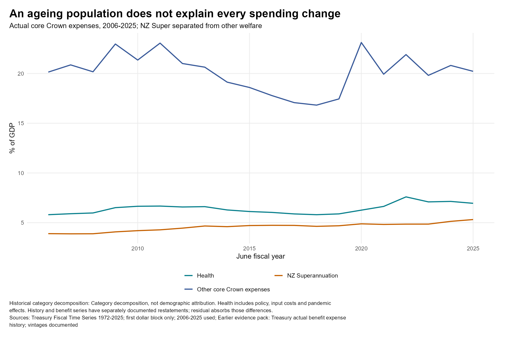
Category decomposition, not demographic attribution. Health includes policy, input costs and pandemic effects. History and benefit series have separately documented restatements; residual absorbs those differences.
PNG · SVG · Plotted data · Source 1 · Source 2
A14_historical_health_vs_age_mix · Observed / fixed-profile comparison
How far does a fixed age profile explain historical health growth?
Actual real health expenditure per resident versus population-composition benchmark
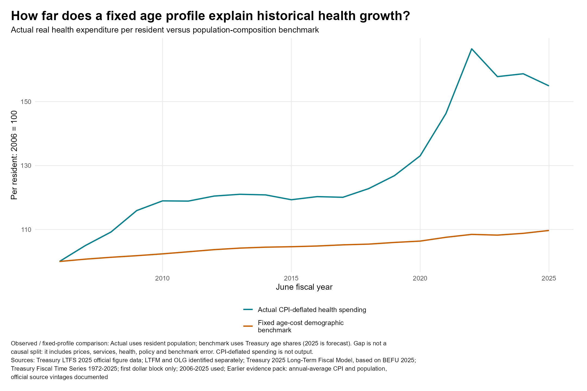
Actual uses resident population; benchmark uses Treasury age shares (2025 is forecast). Gap is not a causal split: it includes prices, services, health, policy and benchmark error. CPI-deflated spending is not output.
PNG · SVG · Plotted data · Source 1 · Source 2 · Source 3 · Source 4
A15_prefu_pension_growth · Forecast accounting decomposition
The near-term pension forecast combines numbers and average expense
PREFU 2026: unaudited 2025/26 base, forecasts to 2030/31
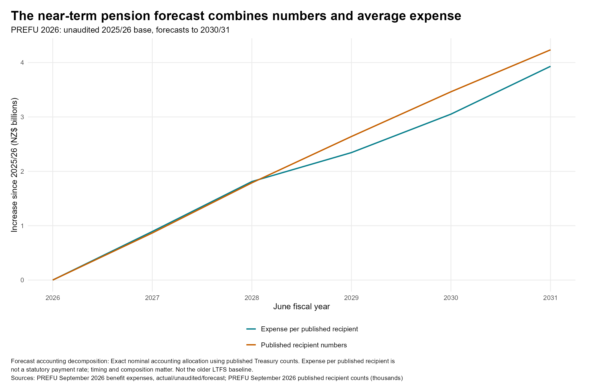
Exact nominal accounting allocation using published Treasury counts. Expense per published recipient is not a statutory payment rate; timing and composition matter. Not the older LTFS baseline.
PNG · SVG · Plotted data · Source 1 · Source 2
A16_long_term_spending_components · Official conditional projection
Long-term spending pressures extend beyond pensions
Core Crown components reconcile to total expenses in the 2025 LTFM
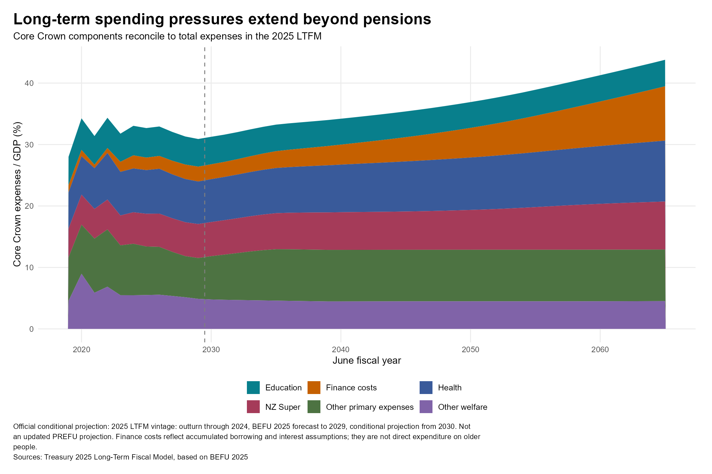
2025 LTFM vintage: outturn through 2024, BEFU 2025 forecast to 2029, conditional projection from 2030. Not an updated PREFU projection. Finance costs reflect accumulated borrowing and interest assumptions; they are not direct expenditure on older people.
PNG · SVG · Plotted data · Source 1
A17_projected_spending_increase · Projection category decomposition
Which categories account for the projected spending increase?
Change from the LTFM's 2025 forecast base to its 2065 projection
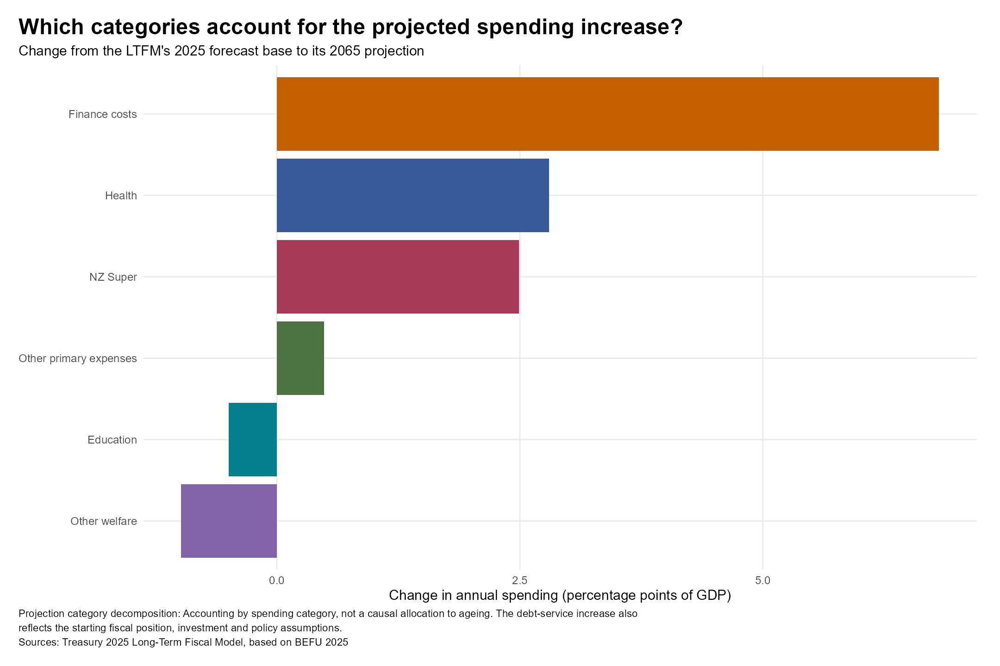
Accounting by spending category, not a causal allocation to ageing. The debt-service increase also reflects the starting fiscal position, investment and policy assumptions.
PNG · SVG · Plotted data · Source 1
A18_projected_pension_ageing_and_capacity · Projection accounting decomposition
Age pressure and economic capacity pull in different directions
Exact identity: NZS/GDP = (65+ / 15-64) × (real NZS per 65+) / (real GDP per 15-64)
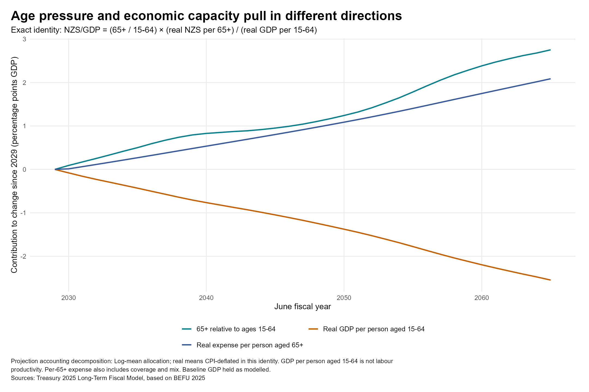
Log-mean allocation; real means CPI-deflated in this identity. GDP per person aged 15-64 is not labour productivity. Per-65+ expense also includes coverage and mix. Baseline GDP held as modelled.
PNG · SVG · Plotted data · Source 1
A19_pension_fixed_age_ratio · Mechanical counterfactual
A mechanical pension comparison with a fixed age ratio
Hold the 65+ / 15-64 ratio fixed; retain modelled spending per older person and GDP per 15-64
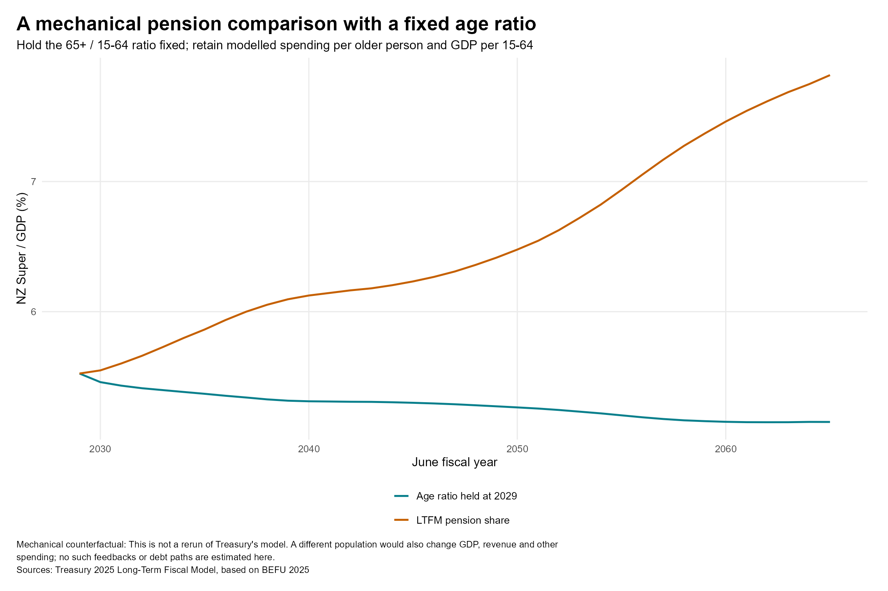
This is not a rerun of Treasury's model. A different population would also change GDP, revenue and other spending; no such feedbacks or debt paths are estimated here.
PNG · SVG · Plotted data · Source 1
A20_tax_transfers_by_age · Published historical age profile
Tax payments and public benefits vary across the life course
Treasury age profile for the year ending March 2019; taxes shown below zero
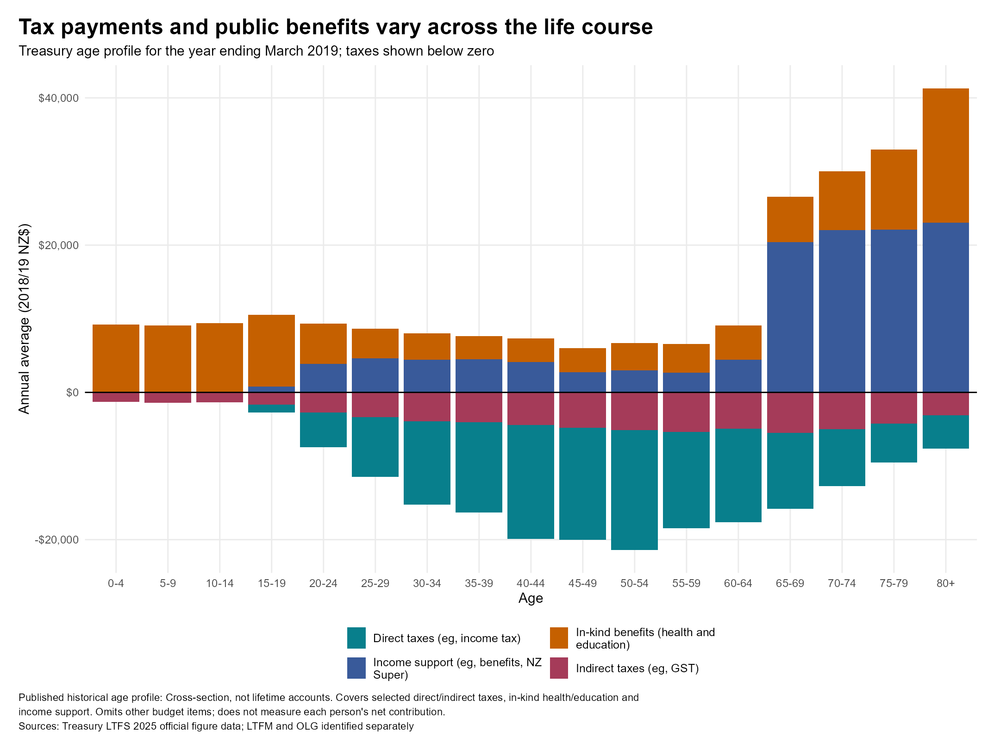
Cross-section, not lifetime accounts. Covers selected direct/indirect taxes, in-kind health/education and income support. Omits other budget items; does not measure each person's net contribution.
PNG · SVG · Plotted data · Source 1
A21_fixed_tax_transfer_age_mix · Fixed-profile counterfactual
Ageing affects revenue capacity as well as spending demand
Reweight the same 2019 tax and benefit age profiles using Treasury population
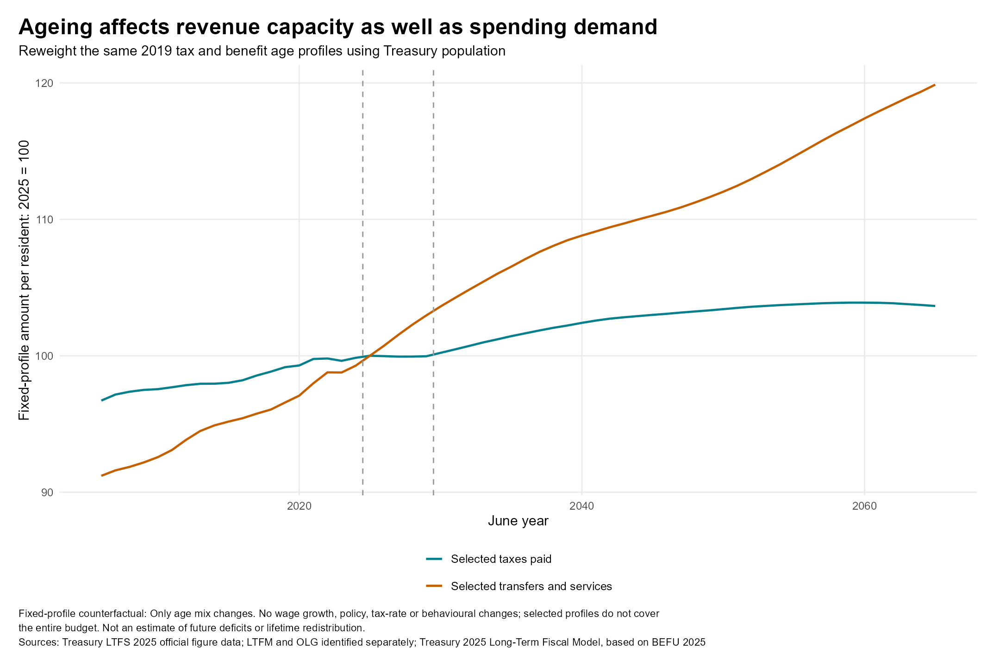
Only age mix changes. No wage growth, policy, tax-rate or behavioural changes; selected profiles do not cover the entire budget. Not an estimate of future deficits or lifetime redistribution.
PNG · SVG · Plotted data · Source 1 · Source 2
A22_health_cost_assumptions · Official OLG scenarios
Health cost assumptions matter alongside ageing
Treasury OLG scenarios: baseline and alternative health spending growth
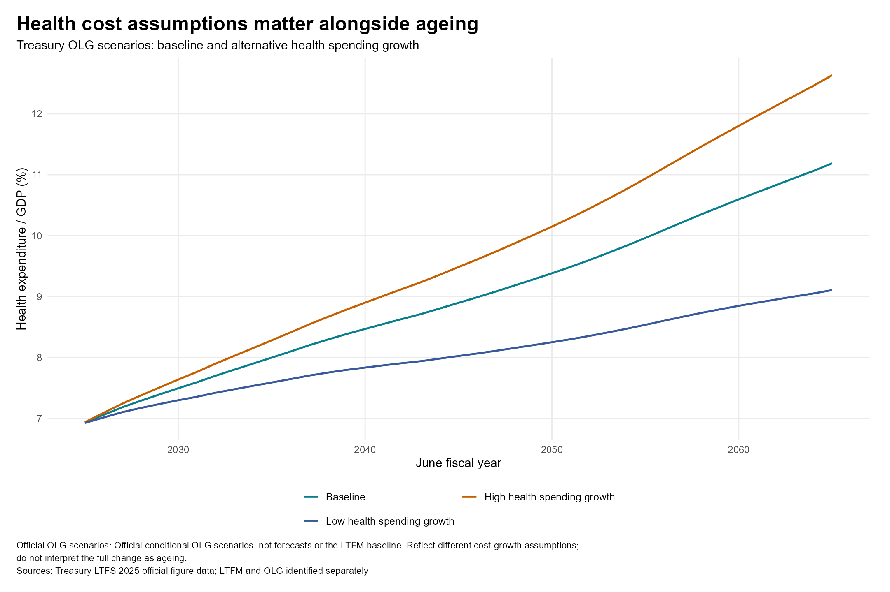
Official conditional OLG scenarios, not forecasts or the LTFM baseline. Reflect different cost-growth assumptions; do not interpret the full change as ageing.
PNG · SVG · Plotted data · Source 1
A23_demographic_alternatives_total · Official OLG scenarios
Alternative demographics change the timing of fiscal pressure
Treasury OLG baseline, higher fertility and higher-skilled migration
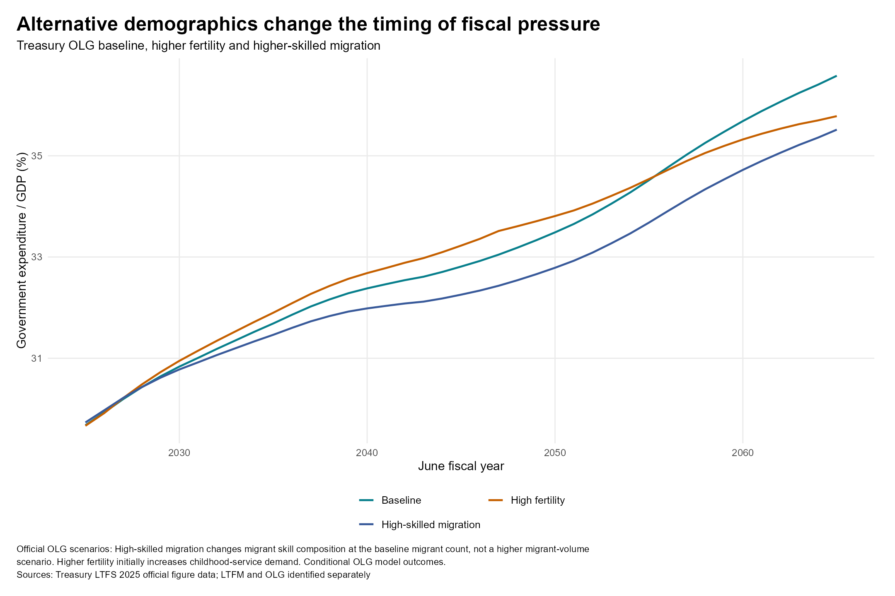
High-skilled migration changes migrant skill composition at the baseline migrant count, not a higher migrant-volume scenario. Higher fertility initially increases childhood-service demand. Conditional OLG model outcomes.
PNG · SVG · Plotted data · Source 1
A24_demographic_alternatives_health · Official OLG scenarios
Health needs change under different demographic futures
Treasury OLG baseline, higher fertility and higher-skilled migration
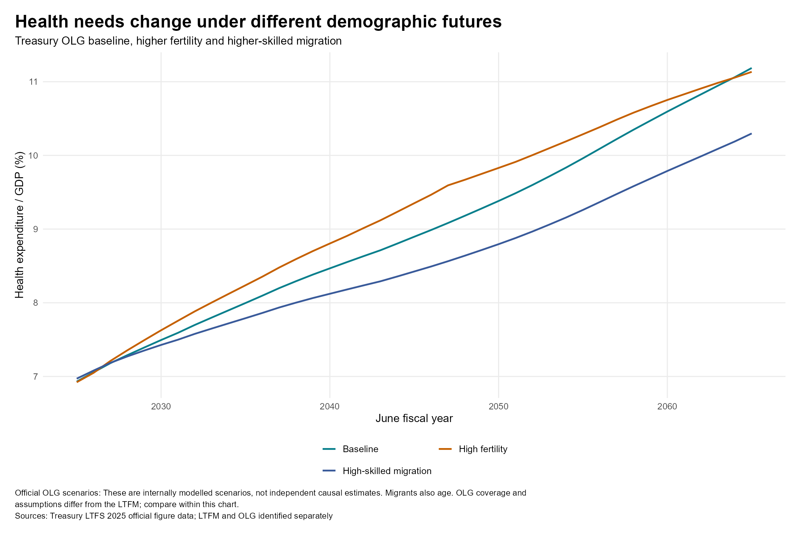
These are internally modelled scenarios, not independent causal estimates. Migrants also age. OLG coverage and assumptions differ from the LTFM; compare within this chart.
PNG · SVG · Plotted data · Source 1
A25_productivity_spending_shares · Official OLG scenarios
Growth need not remove wage-linked spending pressure
Treasury OLG baseline and higher total-factor-productivity scenarios
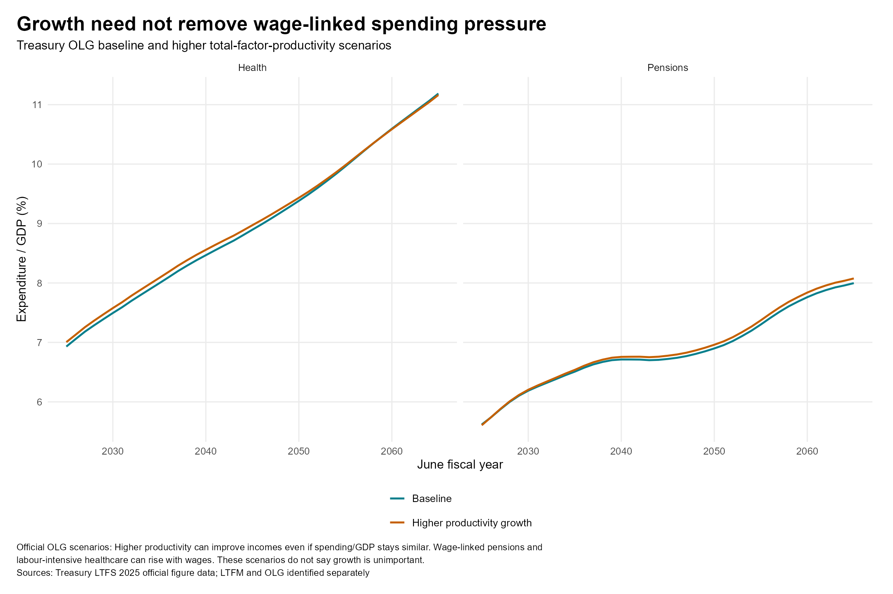
Higher productivity can improve incomes even if spending/GDP stays similar. Wage-linked pensions and labour-intensive healthcare can rise with wages. These scenarios do not say growth is unimportant.
PNG · SVG · Plotted data · Source 1
A26_nzsf_prefunding_role · Official financing projection
Existing pre-funding changes the pension financing requirement
Published LTFS net-of-tax NZS cost with and without net fund contributions/withdrawals
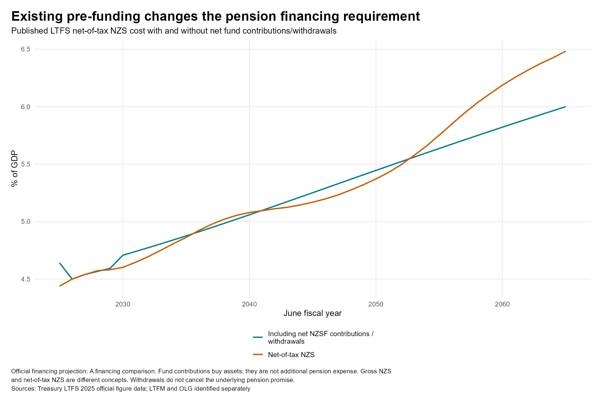
A financing comparison. Fund contributions buy assets; they are not additional pension expense. Gross NZS and net-of-tax NZS are different concepts. Withdrawals do not cancel the underlying pension promise.
PNG · SVG · Plotted data · Source 1
A27_pension_projection_vintages · Published projection-vintage comparison
Previous pension projections provide a reality check
Selected LTFS vintages and the actual series as supplied with LTFS 2025
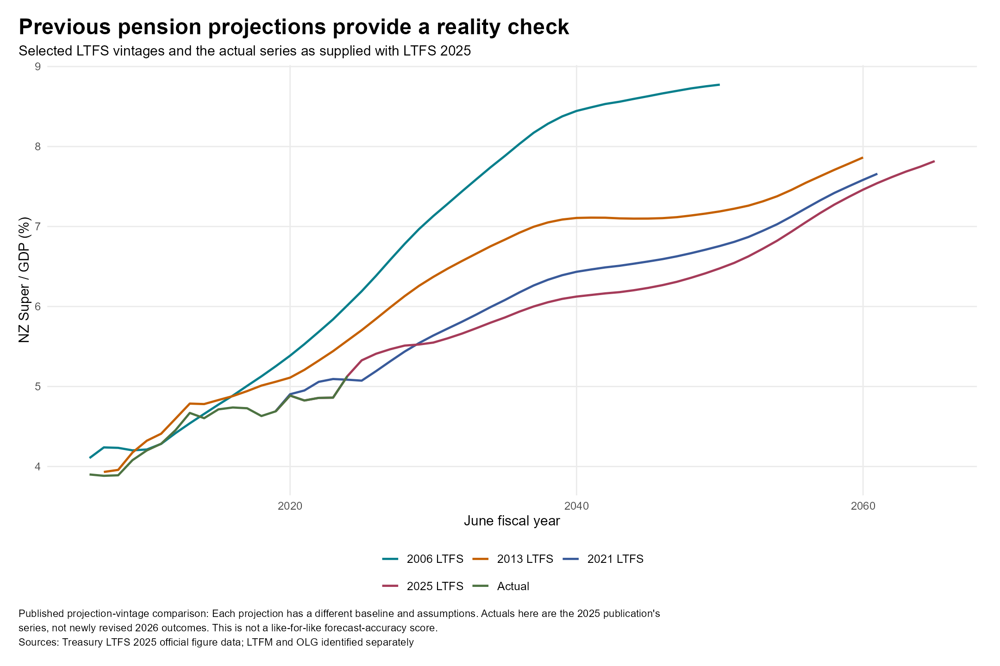
Each projection has a different baseline and assumptions. Actuals here are the 2025 publication's series, not newly revised 2026 outcomes. This is not a like-for-like forecast-accuracy score.
PNG · SVG · Plotted data · Source 1
A28_interest_and_debt_feedback · Official LTFM scenarios
Debt-service feedback amplifies the spending challenge
Treasury LTFM baseline and alternative interest-rate assumptions
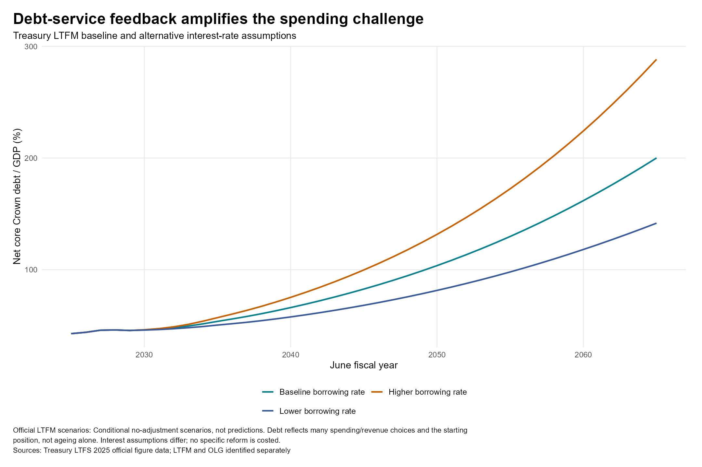
Conditional no-adjustment scenarios, not predictions. Debt reflects many spending/revenue choices and the starting position, not ageing alone. Interest assumptions differ; no specific reform is costed.
PNG · SVG · Plotted data · Source 1